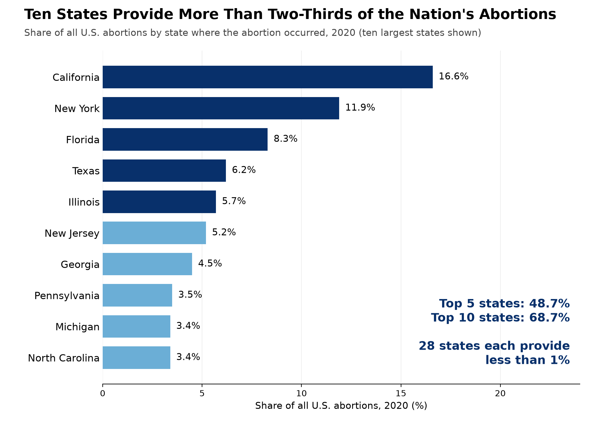
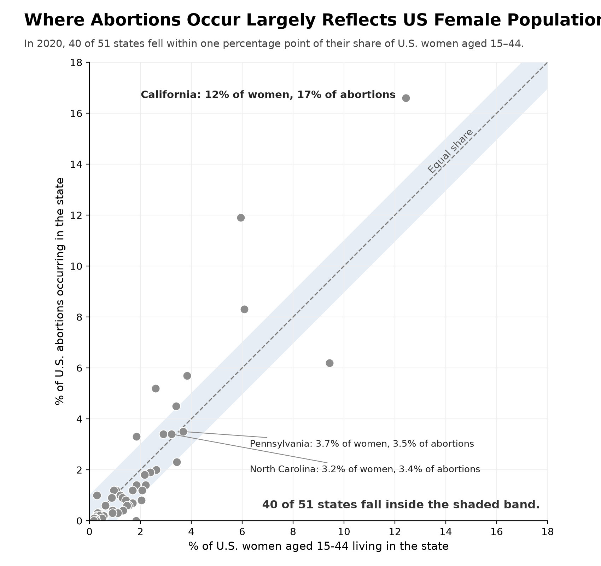

Proposition: Abortion care in the U.S. is disproportionately concentrated in a small number of states.
FOR the Proposition

Design Decisions and Rationale:
- Selected only the top ten states with the highest shares of abortions, excluding the remaining 40 states and DC: This emphasizes the concentration of abortions in relatively few states while leaving out the broader distribution.
- Deception Score = -1: Somewhat deceptive because we intentionally exclude much of the dataset to strengthen our argument. However, the selection of the top 10 is based on a consistent ranking criterion rather than arbitrarily choosing states that support our claim.
- Used each state's share of total U.S. abortions rather than population-adjusted abortion rates. More populous states naturally account for more abortions, so excluding population context makes the concentration appear more disproportionate than it may actually be.
- Deception Score = -1.5: Highly deceptive because population is an important factor in interpreting abortion concentration, and omitting it encourages a potentially misleading conclusion.
- Arranged the states in descending order from highest to lowest abortion occurrence to create a clear visual hierarchy. This made comparisons easier and drew attention to the largest contributors such as California and New York.
- Deception Score = 1.5: Quite earnest because sorting by value is a conventional visualization technique that improves readability and makes comparisons straightforward. Although it reinforces our argument, it was mainly for the purpose of readability and visual cleanliness.
- Used contrasting colors for the top five states: We used dark blue for the five states with the highest shares and a lighter blue for the next five. This draws attention to the top five states, which together account for nearly half of U.S. abortions, and creates a stronger visual distinction between the two groups.
- Deception Score = 0: Difficult to classify as either deceptive or earnest because the color distinction improves readability, but it also creates an artificial division between the fifth and sixth ranked states and between the top 10 states and all other states.
- Highlighted supporting statistics with annotations: We annotated the chart to emphasize that the top five states account for 48.7% of abortions, the top 10 states account for 68.7% of abortions, while 28 states each account for less than 1%. These accurate statistics reinforce our argument, but without population context, they encourage viewers to interpret concentration alone as evidence of a disproportionate distribution.
- Deception Score = -1: Somewhat deceptive because we selectively present statistics that strengthen our proposition while omitting population comparisons that might weaken it. But, the annotations are still communicating accurate information and help readers understand the distribution.
AGAINST the Proposition

Design Decisions and Rationale:
- Selectively labeled states near the equal-share line, along with California: This draws attention to states that support proportional representation while acknowledging California as a notable exception.
- Deception Score = -1.5: Highly deceptive because we primarily direct attention toward states that support our opposing argument while downplaying other states that deviate from proportionality. Including California makes the visualization appear more balanced by acknowledging a major exception, without changing the overall emphasis on states near the equal-share line.
- Used percentage-point gaps rather than ratios: This hides states like New York and New Jersey which have twice their population share of abortions.
- Deception Score = -1: Somewhat deceptive because while absolute percentage-point differences make the comparison consistent and straightforward, they can make substantial relative disparities appear insignificant, especially for smaller states.
- Used equal-scale axes and added an equal-share line: Comparison is clear and easy to read.
- Deception Score = 1: Quite earnest because using consistent axis scales and a reference line allows viewers to accurately identify deviations from equal shares, even though the reference line reinforces our argument by emphasizing proportionality.
- Used an absolute band: This guarantees that the 28 states with under 1% of abortions fall inside it, inflating the “40 of 51” annotation we added.
- Deception Score = -1: Somewhat deceptive because the fixed-width band can conceal large relative differences among states representing small shares of the U.S population by making states with small absolute differences appear proportional, even when their relative differences are substantial. Still, the band applies the same percentage-point threshold to every state and provides a consistent benchmark, so it is not extremely deceptive.
Final Reflection
One of the most challenging parts of this project was coming up with a proposition that could be convincingly supported and opposed using the same dataset. We actually changed our proposition entirely after the checkpoint and continued refining it as we developed our final visualizations. At first, we proposed that states with fewer abortion clinics have less access to abortion care, using out-of-state travel as an indicator of access. However, we found this proposition to be rather broad and difficult to argue against convincingly. We realized that making our proposition more specific helped us identify which variables and comparisons would best support each side, while also making the argument easier for viewers unfamiliar with the dataset to understand. Once we settled on our proposition that abortion care is disproportionately concentrated in a small number of U.S. states, the actual process of writing code and creating the visualizations was relatively straightforward. The more difficult part was deciding how to present the data in ways that would persuade viewers toward opposing conclusions.
Additionally, we found that making intentionally deceptive design decisions was more challenging than we expected. Initially, we associated deception with obvious distortions, such as manipulating axes or cherry-picking impactful values. However, we learned that some of the most effective deceptive techniques are much more subtle and can even appear earnest. For example, our first visualization accurately shows that ten states account for nearly 70% of abortions in the U.S., but omitting population distribution makes this concentration seem more disproportionate than it may actually be. In contrast, many of our earnest design decisions were more straightforward, such as sorting states in descending order to improve readability or using consistent scales to make comparisons easier. What surprised us was how much influence seemingly minor decisions, such as which states to label or how wide to make a shaded reference band, could have on the overall message of a visualization. The shaded reference band was especially effective because a viewer quickly interpreting the visualization will likely notice that most states fall within this region, without necessarily questioning how we determined its width or what being inside the band actually means.
After completing this project, we would define ethical analysis and visualization as communicating an argument supported by data while providing enough context for viewers to interpret that argument accurately. We do not think there is always a clear boundary between acceptable persuasion and misleading visualization, since almost every design choice influences how the audience interprets the data. However, we think persuasion becomes misleading when decisions intentionally obscure important context or encourage conclusions that the data do not fully support. Our biggest takeaway is that ethical visualization requires being conscious of the implications of every design decision, not just checking that the numbers are correct. Chart type, color, titles, axis scales, annotations, and even the information excluded from a visualization can shape what viewers take away. Considering these choices through an ethical lens is important not only to avoid intentionally misleading an audience, but also to recognize messages we might unintentionally communicate through our designs.